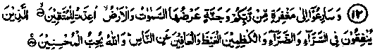
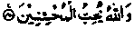
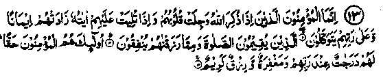
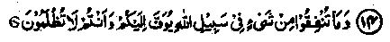
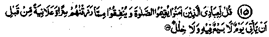
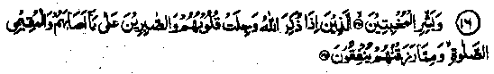
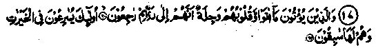
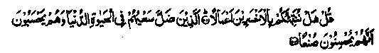

Chapter One · Section (a): Ayaat on the virtues of spending for the cause of Allah
5. Restraining anger and forgiving others

12. And vie one with another for forgiveness from your Lord, and for Jannah as wide as are the heavens and the earth, prepared for the righteous. Those who spend (of that which Allah hath given them) whether in prosperity or adversity, those who restrain their anger and are forgiving towards mankind: Allah loves those who do good. (Aale-Imran: 133-134)
Note: The Ulama have stated that certain Sahabah envied Banu Israel for an occurrence among them that, whenever a person committed a sin, he found it written on his door along with it’s atonement, also indicating the way it was to be carried out e.g. by cutting off the nose or the ear, etc. The Sahabah Radhiallaho anhum envied them for the fact that the forgiveness of the sin (after the atonement), was certain, as they viewed the gravity of any sin so seriously that punishment for it here was considered not only light but enviable, compared to the punishment in the Akhirah. The incidents quoted in the books of Hadith regarding the Sahabah Radhiallaho anhum clearly show that, when any one of them (out of human weakness) committed a sin, he would be overwhelmed by fear of its punishment Not only men, even the women felt the same way. Once a woman committed adultery and presented herself before Muhammad Sallallaho alaihe wasallam, confessed her sin and asked for its atonement, which was death by stoning; and that punishment was ultimately carried out. Why so? Because, the fear of future retribution for the sin committed was far greater than the fear of death.
It is said about Abu Talhah Radhiallaho anho that once a thought of his garden disturbed his devotion in Salaat, so he gave away the garden in Sadaqah for the sake of Allah, and felt happy there after. His sense of values could not tolerate that the thought of a material thing should interrupt him during his prayers. Anything disturbing his mind during Salaat was not worth keeping. Another Ansaari Radhiallaho anho had a similar experience. His date-palms were in full bloom. He thought of them in his Salaat: how finely the dates had ripened! Realising his mistake, he appeared before Uth-man Radhiallaho anho who was then the Khalifah and related the story of his date-palm garden and offered the garden to be given away in Sadaqah. It was accepted by the Khalifah and sold for fifty thousand Dirhams. The money was spent on religious needs. Abu Bakr Radhiallaho anho once, by mistake, ate a doubtful morsel of food, which he wanted to vomit out; so he went on drinking water and vomiting till the morsel came out. He did this for fear of allowing a bit of doubtful food to become a part of his flesh. Numerous incidents of the Sahabah have been narrated in the author’s booklet, "The Stories of Sahabah". With such people, it was not surprising to be envious of Banu Israel who were informed of their sins and the atonement in order to have their sins cleared in this life. Alas! Today we, on our part, are so weak in this respect that it does not even cross our minds how serious are the consequences. Allah Ta'ala, by His grace and benevolence, for His increasing favours and rewards especially meant for the Ummah of His Beloved Rasul Sallallaho alaihe wasallam revealed the above Ayat saying, "Hasten towards such good deeds whereby the forgiveness of Allah shall be readily forthcoming"! Sa‘eed Ibne Jubair Radhiallaho anho in his explanation of this Ayat says that one must hasten, with ones good deeds, towards the forgiveness of Allah Ta'ala and for Jannah, the expanse of which is equal to the seven heavens joined together like a single sheet of cloth stitched out of several pieces and the seven earths also similarly joined with them. Ibne Abbas Radhiallaho anho, has also been quoted to say that the seven heavens and seven earths joined together as one, make up the width of Jannah. Kuraib Rahmatullah alaihe, a slave of Ibne Abbas Radhiallaho anho has said that he was sent by his master to a scholar of Taurah to ask him about the expanse of Jannah, as given in their Scripture. He took out the Scriptures of Moosa Alaihis-salam, studied them, and said that the width of Jannah was as much as the seven heavens and seven earths all joined together as one.
Its length was only known to Allah! Anas Radhiallaho anho says that at the battle of Badr, Rasulullah Sallallaho alaihe wasallam said, "O people! Advance towards the Jannah which is as wide as all the heavens and earths put together." Umair Ibne Hamam Radhi-allaho anho said in astonishment, "O Rasulullah! Is the Jannah so large!" Muhammad Sallallaho alaihe wasallam replied, "Yes, indeed." Unfair Radhiallaho anho applauded it and said, "O Rasulullah! I swear by Allah, I shall be one of those who will go to Jannah. "Rasulullah Sallallaho alaihe wasallam remarked, "Yes! Yes! You are one of those who will go to Jannah". After that, Umair Radhiallaho anho took out some dates from his saddle bag and started eating them (for gaining some strength to fight). But he soon started up, saying, "To eat these dates to the finish would mean too long a wait!" He threw the dates away and rushed into the battle-field and fought till he was killed (martyred). (Durre Manthur)
The above Ayat commends the Momineen (believers) for their virtue of controlling their wrath and forgiving fellow human beings. These are superb qualities indeed! The Ulama have written that, if and when your brother (Muslim) commits a blunder, you should think of seventy excuses for his making that mistake, and convince yourself of the weight of those excuses. If you are still not convinced, do not blame him but yourself, for being hard-hearted and unjust, and say to yourself, "Your brother had seventy reasons for the mistake that he had made but you did not accept any one of them". And if your brother himself presents any excuse, accept it because Rasulullah Sallallaho alaihe wasallam has said that any person to whom another gives an excuse for something and he does not accept it, his din would be as serious as that of the octroi clerk (who
Rasullulah Sallallaho alaihe wasallam has said that one of the qualities of a Momin is that if he gets angry, he soon gets rid of his anger. Rasulullah Sallallaho alaihe wasallam did not say that one should not get angry but that the anger must disappear soon. Imaam Shafa'i Rahmatullah alaihe has said that a person who does not show anger when provoked is like an ass, while one is like Shaitan if his anger is not pacified when he is approached. That is why Allah Ta'ala Shanohu has said, "Those who control their wrath”, and not those who do not get angry. (Ihya). Rasulullah Sallallaho alaihe wasallam has said that when a person is capable of satisfying his anger but, instead, subdues it, Allah Ta'ala grants him peace of mind and ‘Imaan’. (Durre Manthur). Patience in the state of helplessness is common, virtue lies in showing patience when in authority. One Hadith says that nothing which is swallowed is more valuable to Allah Ta'ala than the anger swallowed by a man; and Allah Ta'ala Shanohu fills such a person with Imaan. Another Hadith says that when a person suppresses his anger although he is in power, he will be called forward on the Day of Judgement and, in the presence of all, told to select a Houri for himself. Rasulullah Sallallaho alaihe wasallam has-said that a truly brave person is not one who throws someone on his back but he who overpowers his own wrath. A slave-girl of Ali Rahmatullah alaihe Ibne Imaam Hussain Radhiallaho anho, when helping him to perform wudhu, dropped the water-pot injuring his face. When Ali looked at her angrily, she said, Allah Ta'ala has stated:
And those who control their anger.
Ali Rahmatullah alaihe thereupon suppressed his anger, on which she recited,
And are forgiving towards mankind".
He said to her, "May Allah Ta'ala forgive you." She then recited:

Allah loves the Charitable.
Thereupon he said, "You are a free woman." Once a slave of Ali Rahmatullah alaihe, while carrying a bowl full of hot meat for a guest, accidentally dropped the bowl on the head of Ali’s son and the child died. Ali Rahmatullah alaihe told the slave that he was a free man and could go away, while he himself got bv with the burial of his infant son. (Raudh).

13. They only are the (true) believers whose hearts are full of fear when Allah is mentioned and when Ayaat are recited unto them they increase their faith, and who trust in their Lord. Who establish regular Salaat and spend of that we have bestowed on them. Such are the true believers; for them are positions of honour with their Lord, and pardon and a beautiful provision. (al-Anfaal: 2-4)
Note: Abu Darda Radhiallaho anho has said that an awe-stricken heart is like the dry leafage of date-palm catching fire! Then he addressed his pupil Shahr Ibne Haushah, and asked him if he understood shivering of the body. The pupil replied that he did. Abu Darda Radhiallaho anho then said that such was the time to make Du‘aa which would be accepted. Thabit Banani Rahmatullah alaihe has related that a pious man once said that he could tell which Du‘aa of his was accepted and which one was rejected. People enquired as to how that was. He explained that when his body shivered, his heart was filled with awe and his eyes shed tears, that was the moment when Dua'a was accepted. Suddi Rahmatullah alaihe has said, ‘In the above Ayat the meaning of “when Allah is mentioned’ is to tell a person, ‘Fear Allah’ at the time when he is bent upon inflicting cruelty on someone or is about to indulge in a sin; his heart should then be filled with fear of Allah!1' Harith Ibne Malik Ansaari Radhiallaho anho, a Sahabi, was in the company of Rasulullah Sallallaho alaihe wasallam who asked him, "How are you"? He replied, "O Rasulullah, I have become a true Mcftnin". Rasulullah Sallallaho alaihe wasallam said, "Be careful of what you say; there is a basis for everything; what is the proof of your Imaan?" (i.e. what has made you say that you have become a true Mo’min). He submitted, "I have detached myself from worldly life by keeping awake at night and fasting during the day; the scene of Jannah with happy people meeting each other remains always before my eyes, as well as the cries and uproar of the dwellers in Jahannam". Rasulullah Sallallaho alaihe wasallam said, "Indeed, Harith! You have turned away from worldly life, hold fast to this state", and repeated this three times. (Durre Manthur)
It is obvious that a person who keeps in view the scenes of Jannah and Jahannam, all the time, could never get entangled in the worldly life.

14. All that you give for the cause of Allah shall be repaid fully to you; and you shall not be wronged. (al-Anfal: 60)
Note: The Ayaat and Ahadith, regarding increasing rewards for virtues, may not be taken to contradict this Ayat. It simply says that there will be no diminution of the good deeds done. The rate of reward shall depend on what the occasion demands or on the intention of the person spending and on the general conditions at the time of doing the act. The increase shall be to any extent in the Akhirah, whereas, often a full return is given in this life, as corroborated by other Ayaat and Ahadith. This particular point would be amplified under the Ayaat quoted at serial No. 20 and under the Ahadith given at Serial No. 8.

15. Tell my servants, those who are (true) believers to be steadfast in Salaat and to spend out of that which we provided for them in private and in public, before that day arrives when all trading shall cease and friendship be no more. (Ibrahim: 31)
Note: The propriety of giving Sadaqah in private or in public should be judged in accordance with the conditions at the time of giving it. Both ways are necessary, depending on the circumstances prevailing at that time. It may also mean that obligatory charity is better given publicly, and optional charity is preferably given privately, as has been explained under the Ayat given at Serial No. 9. Establishing Salaat has been discussed in the very first Ayat. Jabir Radhiallaho anho says that once Rasulullah Sallallaho alaihe wasallam delivered a sermon in which he said, "O people! Repent and take a vow to sin no more, before the hour of death, and do good deeds (lest you may not have a chance to do so due to your many occupations); and strengthen the connection between yoUr Lord and yourself by His remembrance in abundance and by giving much in charity, both quietly and openly, because of that you will receive your livelihood, the Divine help and the dispelling of your adversity."

16. And give good news to the humble, whose hearts are filled with awe at the mention of Allah; who endure their misfortune with fortitude, establish Salaat and spend in charity of that which We have given them. (al-Hajj:34-35)
Note: ‘Mukhbiteen’ has been translated as those who are humble’. The Ulama have expressed several views about the meaning of this word. The literal meaning is those who prefer lowliness. Some Ulama have translated it to mean, those who submit and bow their heads before the Commands of Allah’. Some have said it means the people who always show humility and keep their heads down for that reason. Mujahid Rahmatullah alaihe has translated it to mean those who have contentment. Amr Ibne Aas Radhiallaho anho has said that ‘Mukhbiteen’ are those who do not oppress anyone nor do they retaliate when others oppress them. Dhahhak Rahmatullah alaihe says that ‘Mukhbiteen’ are simply the humble ones. Abdullah Ibne Mas‘ood Radhiallaho anho has been reported to have said that whenever he saw Rab'ee Ibne Khaitham Radhiallaho anho he thought of ‘Mukhbiteen’.

17. And those who give that which they give with hearts full of fear because they are about to return unto their Lord. They race for the good things, and they shall win them in the race. (al-Momenun: 60-61)
Note: Despite their spending in the path of Allah, they are always afraid of the fate of their charity: whether ic will be accepted or not. It is due to the infinite Greatness and Sublimity of Allah Ta'ala Shanohu that the more one advances spiritually, the more he is overwhelmed by His awe and fear. Particularly the person who is generally awed by the Greatness of Allah Ta'ala, is always afraid for his sincerity of intention in spending, as ‘Nafs’ and ‘Shaitan’ often deceive a person about his deed being a virtue, although actually it is not a virtue. As has been said in the last Ruku of Surah Kahf:

Say: Shall We inform you who will be the greatest losers by their works? Those whose effort goes astray in the life of the world, and yet they reckon that they do good work. (al-Kahf: 103 -104)
Hasan Basri Rahmatullah alaihe says that a Momin remains apprehensive even after doing virtuous deeds, whereas a hypocrite becomes fearless after committing sins. A number of instances have been mentioned in ‘Fazail-e-Hajj’ of the people whose hearts are so awed by the Grandeur and Greatness of Allah Ta'ala Shanohu that they are afraid to say () (here am I offering myself for Thy service!) lest they be rejected by Him. Aishah Radhiallaho anha says that she asked Rasulullah Sallallaho alaihe wasallam, "Does this Ayat (No. 17 above) concern those who indulge in stealing, adultery, drinking wine and other sins, and at the same time they fear due to the fact that they have to return to Allah"? (that is to say, they are afraid of facing Allah Ta'ala Shanohu for their sins). Rasulullah Sallallaho alaihe wasallam replied, "No! it concerns those who observe fasting, give in charity and are regular in their Salaat, yet they are afraid all the time of rejection of these virtues". In another Hadith Aishah Radhiallaho anha asked Rasulullah Sallallaho alaihe wasallam whether the aforesaid Hadith (S. No. 17) referred to those who committed sins and mistakes and feared Allah. Rasulullah Sallallaho alaihe wasallam answered in the negative and explained that it referred, instead, to persons who offer Salaat, observe Fast, and give Sadaqah and still their hearts are full of fear. Ibne Abbas Radhiallaho anho has been quoted to say that it refers to the people who do righteous deeds but are apprehensive Saeed Ibne Jubair Rahmatullah alaihe says that it refers to those who give charity but fear the severity of accountability in front of Allah Ta'ala. Hasan Basri Rahmatullah alaihe says that they are the people who act righteously, yet fear that their virtues may not bring them salvation. The face of Zainul Abedin Rahmatullah alaihe Ibne Hussain Radhiallaho anho used to turn pale when he stood up to perform Salaat and his body shivered. When someone asked him the reason, he said in reply, "Do you know before whom I am standing?" Several instances of this type have been mentioned in the ‘Virtues of Salaat’ and a special Chapter has been devoted in ‘Stories of Sahabah’ concerning those who feared Allah Ta’ala Shanohu.